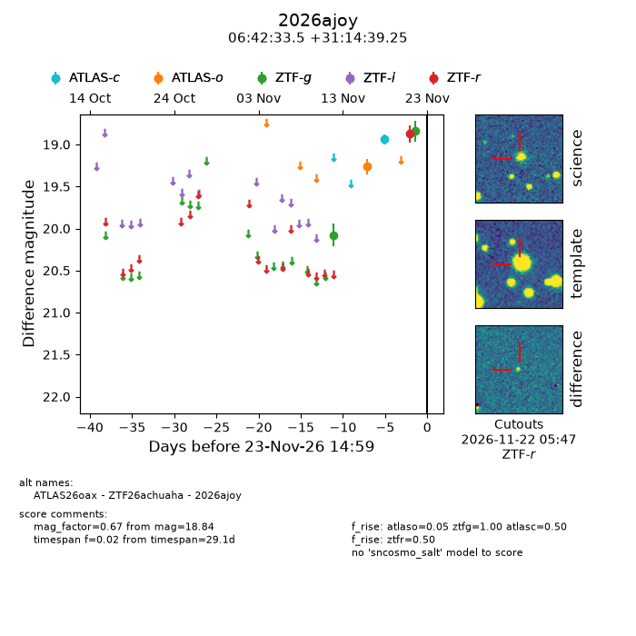
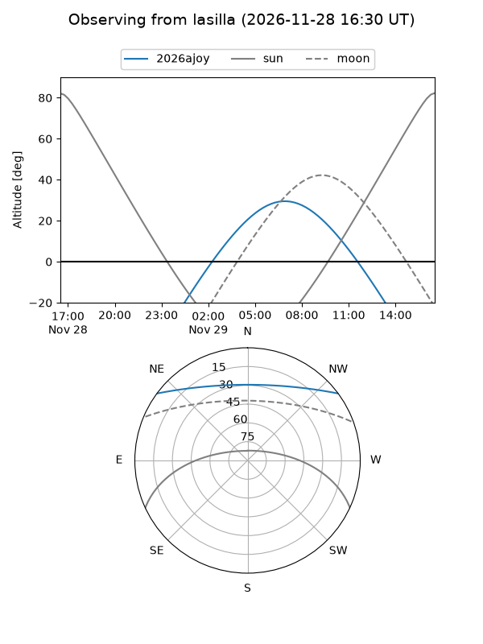
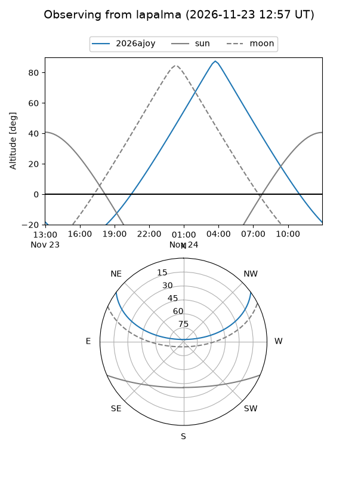
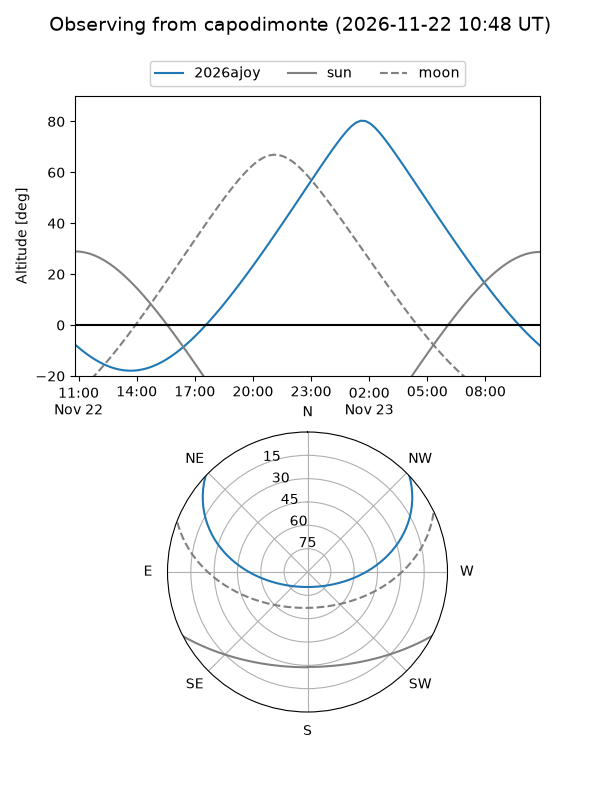
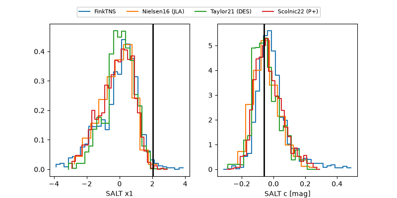

2026ajoy
Target 2026ajoy at 2026-11-23 15:00
Aliases and brokers:
FINK-ZTF: ztf.fink-portal.org/ZTF26achuaha
Lasair-ZTF: lasair-ztf.lsst.ac.uk/objects/ZTF26achuaha
ALeRCE-ZTF: alerce.online/object/ZTF26achuaha
YSE-PZ: ziggy.ucolick.org/yse/transient_detail/2026ajoy
TNS name: wis-tns.org/object/2026ajoy
Direct TNS query: direct search
alt names
ZTF26achuaha (ztf,fink_ztf)
2026ajoy (tns,yse)
ATLAS26oax (atlas)
Coordinates:
equatorial (ra, dec) = 100.6395,+31.24424
equatorial (HMS+DMS) = 06:42:33.47,+31:14:39.25
galactic (l, b) = (183.7696,+11.94881)
Flags:
peak dt:
Photometry:
last atlasc=18.94, atlaso=19.26, ztfg=18.84, ztfr=18.87
1 atlasc, 2 atlaso, 2 ztfg, 1 ztfr detections
Lightcurve

Visibility



Additional plots
